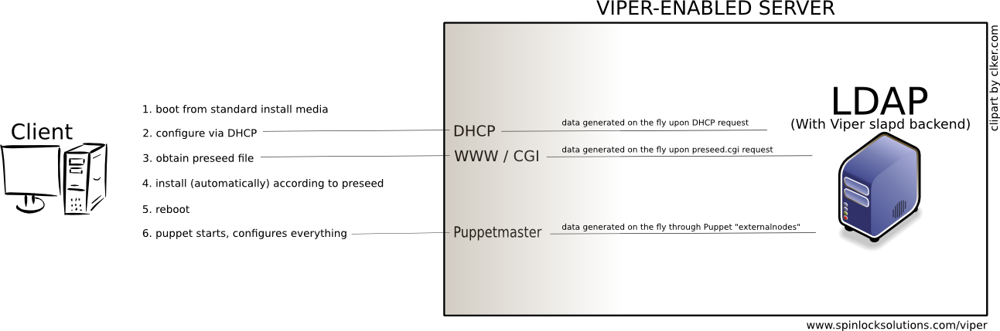

Viper - steps in the host install process

(Click the image for full size)
{kind=link}
Description
For an overview, just read the page. Links are provided for more detailed information on individual steps.- Boot from
standard install media - use any standard Debian install
media, no need for customizations. To boot from CD-Rom, use ready-made
Debian CD/DVD images. To boot from USB stick, the easiest way is to
install GUI program "unetbootin" and use it to create a bootable stick.
- Configure
via DHCP - in this step, dhclient
on the workstation will send a DHCP request. DHCP server will see the
request and perform a query to LDAP, in an attempt to find the specific
host (not just a random IP from the DHCP pool). When the request
reaches LDAP, it will be rewritten and redirected as necessary (using
features of the Viper slapd backend) to find the host entry. It is
sufficient for the entry to only contain macAddress and ipHostNumber
defined, Viper will construct all other options on the fly.
- Obtain
preseed file - after obtaining IP and related options thru
DHCP, the host will request the preseed file, at url=http://server/d-i/DIST_NAME/preseed.cfg.
In our setup, that file is a CGI script which performs a query to LDAP
to produce the preseed file. LDAP is able to find the host for which
the configuration should be generated based on the requestor's IP.
- Install
(automatically) according to preseed - the installation
proceeds. When everything has been preseeded correctly, no questions
will be asked interactively. Only the minimal Debian system will be
installed, plus Puppet and, optionally, some minimal .debs that will do
the necessary preparations. Those optional debs, if installed, do
things like add LDAP support for Debconf and configure Debconf to use
LDAP etc.
- Reboot
- Puppet starts, configures everything - puppet will start and contact puppetmasterd. Master server will produce configuration based on site manifests, modules etc., and "externalnodes" information (list of classes a host belongs to, and definitions of parameters (variables)). The external nodes script contacts LDAP to produce the information, but we do not use Puppet's LDAP node terminus directly, because we want to do some very useful and necessary extra processing to produce classes and variables.